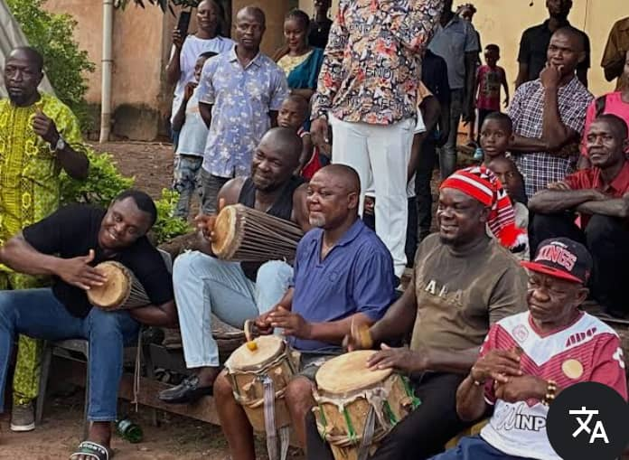

The Story, Heritage & Pride of Mbuluawuri Autonomous Community
Nkwubor Nike is an autonomous community located in Enugu East Local Government Area of Enugu State, Nigeria. The community is founded on strong cultural traditions, respect for leadership, and a shared commitment to unity and progress. Guided by established customs and community institutions, Nkwubor Nike Community promotes peaceful coexistence, collective responsibility, and the preservation of cultural heritage. At the same time, the community supports initiatives that encourage education, youth empowerment, and social development. This blog reflects our values of openness, accountability, and community engagement.

Nkwubor Nike is one of the vibrant communities located within Mbuluawuri Autonomous Community in Enugu East Local Government Area of Enugu State, Nigeria. The people of Nkwubor are part of the greater Nike cultural heritage known for their deep traditions, communal unity, and strong ancestral roots.
The history of the community dates back many generations when early settlers established families, farmlands, and traditional institutions that continue to shape the identity of the people today.

The people of Nkwubor Nike proudly preserve their cultural heritage through festivals, traditional leadership, and communal activities. Cultural events serve as moments of unity where elders, youths, and families celebrate their identity.
Respect for elders, strong family values, and collective development have remained pillars of the community's way of life.

Over the years, Nkwubor Nike has grown steadily with increasing participation of community members in development projects, education, and modern opportunities.
The community continues to progress through collaboration, leadership, and the commitment of its people to build a prosperous future while honoring the past.

Peace remains the foundation of Nkwubor Nike Community. Our people value harmony, mutual respect, and peaceful coexistence among families and neighboring communities.
Equity guides the way decisions are made within the community. Every voice matters, and fairness is upheld through traditional leadership, communal dialogue, and shared responsibility.
Nkwubor Nike believes in continuous development. Through education, unity, and collective effort, the community strives to build a brighter and prosperous future.